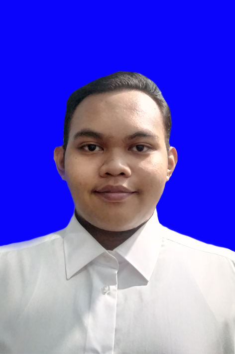

Sekilas tentang saya
Halo! Nama saya Muhammad Hardiansyah, saya lahir di Malang pada tanggal 1 Mei 2002. Saya adalah mahasiswa semester dua
di Universitas Sebelas Maret.
Saya berada di program studi PTIK atau kepanjangannya Pendidikan Teknik
Informatika dan Komputer.
Hobi
Sebelum pandemi ini, sebenarnya saya memiliki beberapa hobi. Diantaranya:
Basket, saya bermain basket sejak kelas X SMA. Awalnya karena saat perlombaan antarkelas, tim saya kekurangan orang dan
saya masuk menjadi bagian di tim tersebut. Yah meskipun sering travelling saat sedang meng drible bola tetapi
saya menyukainya. Namanya juga pemula.
Membaca, meskipun saya sering tidur di kelas saat pelajaran. Tetapi sebenarnya saya suka membaca, namun bukan buku pelajaran
yang sering saya baca. Biasanya saya baca manga, novel, dan buku yang saya anggap seru untuk dibaca.
Namun semenjak pandemi menyerang, hobi saya berganti menjadi tidur. Saya tidak tau harus ngapain lagi dirumah. Apalagi saat setelah kelulusan SMA. Saya merasa boring setiap hari dan akhirnya saya tidur.
Kenapa saya di PTIK?
Sebenarnya PTIK adalah pilihan kedua saya dalam SBMPTN saya. Pilihan pertama saya adalah TI atau Teknik Informatika. Bahkan sebelum pemilihan jurusan, saya tidak tahu bahwa ada jurusan PTIK di UNS. Karena saya rasa jurusan PTIK akan sedikit sama dengan TI, jadi ya saya pilih saja sebagai pilihan kedua saya.
Apakah saya menyesal masuk PTIK?
Tentu saja tidak. Saya bersyukur masuk PTIK (ya daripada mengulang tahun depan).